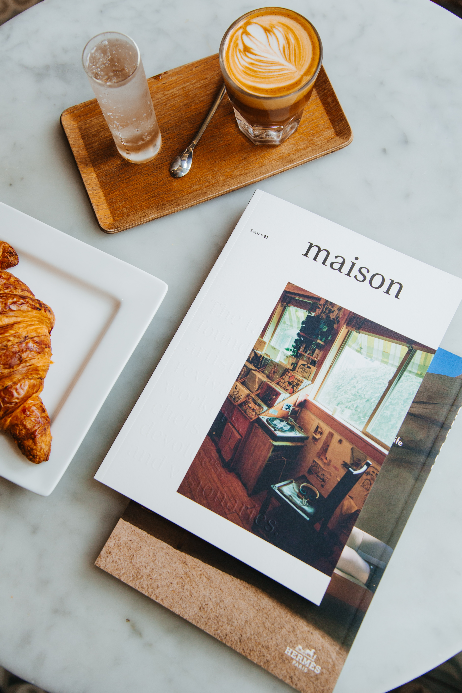

Creative and detail-oriented Creative director and strategist with 5+ years of professional experience crafting compelling visual narratives for YouTube channels, digital platforms, and brand campaigns. Proficient in Adobe Premiere Pro, After Effects, and DaVinci Resolve, with a strong command of motion graphics, colour grading and sound design. Experienced in full-cycle post-production from rough cut to final delivery.
Specializes in logo design, typography systems, YouTube channel branding, and UI/UX design, with a portfolio spanning bold consumer brands to clean corporate identities. Committed to designs that are visually compelling and strategically aligned with each client's brand purpose.
Skilled at crafting persuasive narratives, managing digital communities, and building brand equity through strategic visual and written communication. Adept at engaging diverse audiences and coordinating multi-channel campaigns.
Currently building technical proficiency in front-end and back-end web development, cybersecurity fundamentals, and AI/ML concepts. Brings a unique cross-disciplinary perspective — combining media literacy, creative thinking, and emerging technical skills to develop accessible, visually compelling digital products.

Completely synergize resource taxing relationships via premier niche markets.
Imagine jumping into that boat, and just letting it sail wherever the wind takes you...
Holisticly predominate extensible testing procedures for reliable supply chains.
Objectively innovate empowered manufactured products whereas parallel platforms